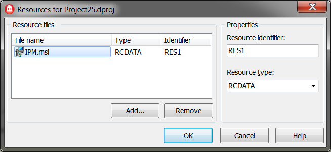
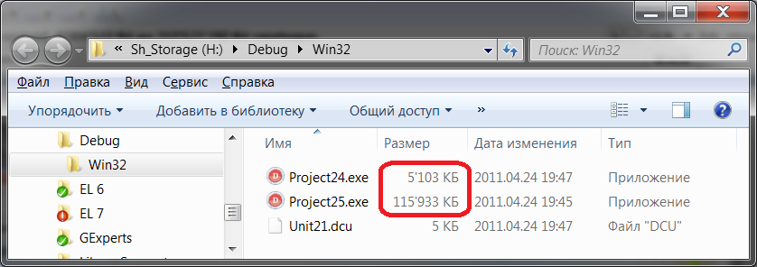
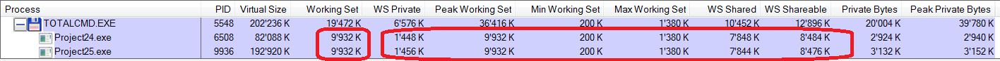

Миф №10: большой .exe файл - это плохо, потому что он тратит память
Замечу, что, конечно же, в этом мифе имеется в виду физическая память, а не виртуальная - в том смысле, что большее потребление физической памяти - это нагрузка на систему, т.е. плохо. Очевидно, что виртуальное адресное пространство включает в себя .exe файл, так что тут даже нечего обсуждать.
Итак, я создал два идентичных проекта (пустых VCL приложения). Но во втором приложении я сделал Project / Resources and images и выбрал 110-мегабайтный файл:

Компиляция и мы получаем два файла - в примерно 5 и 110 Мб (включена отладочная информация TD32):

Запускаем обе программы и...

Неожиданно оказывается, что обе программы, несмотря на двадцатикратную разницу в размере, потребляют полностью идентичное количество оперативной памяти! Сюрприз.
Мне кажется, что этот миф получается из-за того, что люди не видят разницы между оперативной памятью и виртуальным адресным пространством.
Смысл в том, что при загрузке программы (или DLL) её файл проецируется на адресное пространство процесса с помощью механизма проецируемых в память файлов. Как и виртуальная память, проецируемые файлы позволяют резервировать регион адресного пространства и передавать ему физическую память. Различие между этими механизмами состоит в том, что в последнем случае физическая память не выделяется из страничного файла (файла подкачки), а берется из файла, уже находящегося на диске. Как только файл спроецирован в память, к нему можно обращаться так, будто он целиком в нее загружен.
Проецируемые файлы применяются для:
Вот почему мы видим увеличение на +110 Мб виртуальной памяти у второго процесса - потому что туда спроецирован больший по размеру .exe файл.
При вызове из потока функции CreateProcess система действует так:
Спроецировав ЕХЕ-файл на адресное пространство процесса, система обращается к разделу ЕХЕ-файла со списком DLL, содержащих необходимые программе функции. После этого система, вызывая LoadLibrary, поочередно загружает указанные (а при необходимости и дополнительные) DLL-модули. Всякий раз, когда для загрузки DLL вызывается LoadLibrary, система выполняет действия, аналогичные описанным выше в пп. 4 и 5.
После увязки EXE- и DLL-файлов с адресным пространством процесса начинает исполняться стартовый код EXE-файла. Подкачку страниц, буферизацию и кэширование система берет на себя. Например, если код в ЕХЕ-файле переходит к команде, не загруженной в память, возникает ошибка. Обнаружив её, система перекачивает нужную страницу кода из образа файла на страницу оперативной памяти. Затем она отображает страницу оперативной памяти на должный участок адресного пространства процесса, тем самым позволяя потоку продолжить выполнение кода. Все эти операции скрыты от приложения и периодически повторяются при каждой попытке процесса обратиться к коду или данным, отсутствующим в оперативной памяти.
Иными словами, при загрузке процесса, не имеет значения, какого размера будет .exe файл - файл будет лишь спроецирован на адресное пространство, но в физической памяти будет только первая страница кода. Все остальные части будут загружены только по мере обращения кода к ним.
Но наша работа на этом ещё не закончена. Когда же размер файла имеет значение?
Ответ: при упаковке или шифровании.
В Windows загрузчик читает лишь заголовок и таблицу импорта файла, а затем проецирует его на адресное пространство процесса так, будто бы файл является частью виртуальной памяти, хранящейся на диске. Подкачка с диска происходит динамически - по мере обращения к соответствующим страницам памяти, причем загружаются только те из них, которые действительно нужны.
Например, если в текстовом редакторе есть модуль работы с таблицами, он не будет загружен с диска до тех пор, пока пользователь не захочет создать (или отобразить) свою таблицу. Причем неважно - находится ли этот модуль в динамической библиотеке или в основном файле. Загрузка таких "монстров", как Delphi и Word, как бы "размазывается" во времени и к работе с приложением можно приступать практически сразу же после его запуска. А что произойдет, если файл упаковать? Правильно - он будет должен считаться с диска целиком (!) и затем - опять-таки, целиком - распаковаться в оперативную память.
Стоп! Откуда у нас столько оперативной памяти? Ее явно не хватит и распакованные страницы придется вновь скидывать на диск! Как говорится: за что боролись, на то и напоролись. Причем, если при проецировании неупакованного EXE-файла оперативная память не выделяется, (во всяком случае, до тех пор, пока в ней не возникнет необходимость), то уж распаковщику без памяти никак не обойтись. А поскольку оперативной памяти никогда не бывает в избытке, она может быть выделена лишь за счет других приложений! Отметим также, что в силу конструктивных особенностей железа и архитектуры операционной системы, операция записи на диск заметно медленнее операции чтения.
Важно понять: Windows никогда не сбрасывает на диск не модифицированные страницы проецируемого файла. Зачем ей это? Ведь в любой момент их можно вновь считать из оригинального файла. Но при распаковке модифицируются все страницы файла! Значит, система будет вынуждена "гонять" их между диском и памятью, что существенно снизит общую производительность всех приложений в целом.
Еще большие накладные расходы влечет за собой сжатие динамических библиотек. Для экономии памяти страницы, занятые динамической библиотекой совместно используются всеми процессами, загрузившими эту DLL (об этом - в следующем мифе). Но как только один из процессов пытается что-то записать в память, занятую DLL, система мгновенно создает копию модифицируемой страницы и предоставляет ее в "монопольное" распоряжение процесса-писателя. Поскольку распаковка динамической библиотеки происходит в контексте процесса, загрузившего ее, система вынуждена многократно дублировать все страницы памяти, выделенные библиотеке, фактически предоставляя каждому процессору свой собственный экземпляр DLL. Предположим, одна DLL размером в мегабайт, была загружена десятью процессами - посчитайте: сколько памяти напрасно потеряется, если она сжата!
Таким образом, под Windows сжимать исполняемые файлы нецелесообразно - вы платите гораздо больше, чем выручаете.
Статус мифа: busted.